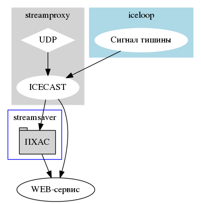

ffmpeg/streamproxy [ Files ]
NAME
streamproxy - проксирование аудиопотока на Icecast
VERSION
1.0
DESCRIPTION
Сценарий принимает аудиопоток с оборудования, по UDP или TCP, и ретранслирует поток на сервер радиовещания icecast для получения сигнала другими программами и прослушивания аудио конечным пользователем.
Проксирование будет доступно только при задании в файле настроек опции <proxy>1</proxy>

USAGE
streamproxy <файл настроек>
ARGUMENTS
- <файл настроек> - xml-файл с описанием входящего и выходящего потоков и правилами фрагментирования записей.
streamproxy/readXML [ Functions ]
[ Top ] [ streamproxy ] [ Functions ]
NAME
readXML - получение значения опции из файла настроек
USAGE
readXML <опция> <файл>
ARGUMENTS
- опция - имя опции
- файл - xml-файл с настройками
RESULT
Значение параметра при наличии искомой опции в xml-файле или значение по
умолчанию, которое задаётся при инициализации переменной config.
SOURCE
82 readXML() { 83 \grep -oPm1 "(?<=<$1>)[^<]+" "$2" 84 }
streamproxy/proxyCMD [ Functions ]
[ Top ] [ streamproxy ] [ Functions ]
NAME
proxyCMD - создание команды для передачи аудиопотока
DESCRIPTION
Процедура составляет команду ffmpeg на основе конфигурационного файла
RESULT
Команда ffmpeg, которую можно передать на выполнение.
SOURCE
100 proxyCMD() { 101 STREAM=$(readXML stream "$XML") 102 ICECAST="$(readXML icecast $XML)/$(readXML mountpoint $XML)" 103 ICENAME="$(readXML channel_name $XML)" 104 ICEDESC="$(readXML channel_descr $XML)" 105 ICEPASS="$(readXML password $XML)" 106 FORMAT_IN="$(readXML input_format $XML)" 107 FORMAT_OUT="$(readXML output_format $XML)" 108 109 echo ffmpeg \ 110 -fi "$FORMAT_IN" \ 111 -i "$STREAM" \ 112 -fi "$FORMAT_OUT" \ 113 -legacy_icecast 1 \ 114 -content_type audio/mpeg \ 115 -ice_name "$ICENAME" \ 116 -ice_description "$ICEDESC" \ 117 icecast://source:$ICEPASS@$ICECAST 118 }
streamproxy/main [ Toplevel ]
[ Top ] [ streamproxy ] [ Toplevel ]
NAME
streamproxy
SOURCE
129 #Проверка аргументов 130 if [ -z $1 ]; then 131 echo "USAGE: $0 <xml>" 132 exit 1 133 fi 134 135 #Файл настроек 136 XML="$1" 137 138 #Проверка использования прокси 139 PROXY=$(readXML proxy "$XML") 140 141 if [ "$PROXY" == 1 ]; then 142 proxyCMD 143 fi